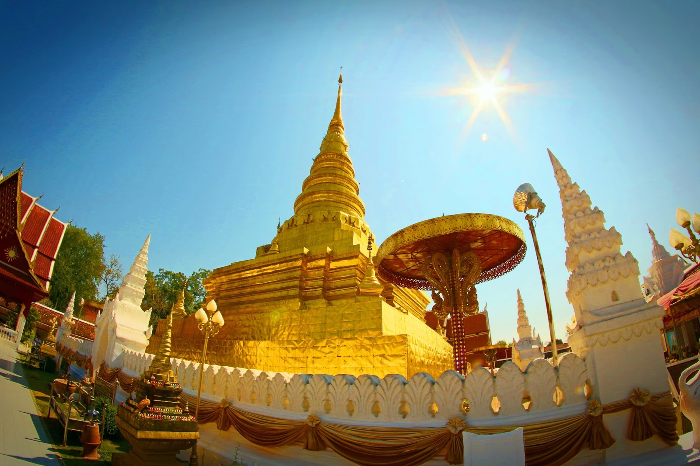

จังหวัดน่าน
คำขวัญประจำจังหวัด
แข่งเรือลือเลื่อง เมืองงาช้างดำ จิตรกรรมวัดภูมินทร์ แดนดินส้มสีทอง เรืองรองพระธาตุแช่แห้ง
น่านเป็นเมืองโบราณเมืองหนึ่ง เดิมชื่อ เมืองน่าน หรือ เมืองนันทบุรี สร้างขึ้นประมาณปี พ.ศ.1911 สำหรับประวัติการสร้างเมืองมีความเกี่ยวข้องกับกับตำนานเมืองวรนคร ซึ่ง กล่าวไว้ว่า ประมาณต้น พ.ศ.1800 พญาภูคา เจ้าเมืองย่างมีราชบุตร บุญธรรมอยู่ 2 องค์ นามว่า ขุนนุ่น และ ขุนฟอง พญาภูคาได้สร้างเมืองใหม่ ขนานนามเมืองนี้ว่า “ วรนคร ” สถาปนาให้ขุนฟอง เป็นเจ้าผู้ครองเมือง ต่อจากขุนฟองได้มีเจ้าผู้ปกครองนครสืบต่อมาเรื่อยๆ จนถึงพญาการเมือง ในสมัยนั้นเมืองวรนครตกเป็นเมืองขึ้นของกรุงสุโขทัย ต่อมาได้อพยพผู้คนมาสร้างเมืองใหม่ เสร็จประมาณ พ.ศ.1902 และขนานนามเมืองนี้ว่า “ เมืองภูเพียงแช่แห้ง ” หรือเวียงแช่แห้ง พญาการเมืองครองเมืองได้ 5 ปีก็ถึงแก่พิราลัย พญาผากองบุตรจึงสืบต่อครองเมืองแทน 6 ปีให้หลังพญาผากองได้พิจารณา ทางฝั่งแม่น้ำทางตะวันตก (บริเวณบ้านห้วยไค้) มีความอุดมสมบูรณ์ จึงไปสร้างเมืองใหม่ที่นั้น ในปี พ.ศ. 1911 เดิมเมืองน่านก็มีคนเรียกว่า เมืองนันทบุรีบ้าง แต่ตามหลักศิลาจารึกในสมัยพ่อขุนรามคำแหง มหาราชเรียกว่า “ เมืองน่าน ” มีการสันนิษฐานว่า คงเพี้ยนมาจากคำว่า น่าง หรือนางเจียงในภาษาจีน ซึ่งแปลว่าทิศใต้ แต่อย่างไรชาวเมืองน่านก็ยังเรียกว่าตามเดิมว่า “ เมืองน่าน ” มาถึงสมัยที่อาณาจักรล้านนารุ่งเรือง ขึ้น เชียงใหม่เป็นราชธานีราวปี พ.ศ. 2004 เมืองน่านก็ขึ้นต่อเชียงใหม่และรวมเป็นอาณาจักรล้านนา จนอาณาจักรล้านนาได้ตกเป็นเมืองขึ้น ของพม่ารวมถึงน่านด้วย ใน พ.ศ.2099 ถึง พ.ศ.2317 เมืองเชียงใหม่เอาชนะพม่าได้และรวมเมือง ต่างๆ รวมถึงเมืองน่านเป็นอาณาจักรล้านนา ในปี พ.ศ.2352 อาณาจักรล้านนาถูกผนวกเข้ากับ อาณาจักรไทย เมืองน่านถูกแบ่งออกจากล้านนา มีฐานะเป็นเมืองประเทศราช เจ้าเมืองขึ้นตรงกับกรุงรัตนโกสินทร์เรื่อยมา ในรัชกาลที่ 2 เมืองน่านนั้นถูกแม่น้ำน่านท่วมตัวเมืองจนได้รับความเสียหายอย่างมาก พญาสุมนเทวราช เจ้าครองนครน่านในสมัยนั้นได้อพยพชาวเมืองไปสร้างเมืองใหม่บนที่ดอน เพื่อกันน้ำท่วม อยู่ที่นั้นนาน 36 ปี จนปลายรัชกาลที่ 4 แม่น้ำน่าน ได้เปลี่ยนเส้นทางห่างไปมาก เจ้าอนันตวรฤทธิเดชเจ้าครองเมืองน่าน ได้ขอพระบรมราชานุญาตจากสมเด็จพระจอมเกล้าเจ้าอยู่หัว ย้ายเมืองมาตั้ง ณ ที่เดิม ได้มีการซ่อมแซมเมืองเก่าที่ทิ้งร้างไปให้กลับคืนมา แล้วสร้างกำแพงเมืองขึ้นใหม่ก่อด้วยอิฐถือปูน ในปี พ.ศ.2400 ซึ่งยังปรากฏให้เห็นในปัจจุบัน ตลอดมาจนถึงเจ้าครองนครน่านคนสุดท้าย ซึ่งตรงกับรัชกาลที่ 6 ต่อถึง รัชกาลที่ 7 เมื่อมีการเปลี่ยนแปลงการปกครองในปี พ.ศ.2475 รัฐบาลประกาศให้ ยกเลิกตำแหน่งผู้ปกครองเมืองต่างๆ และให้แต่ละจังหวัดขึ้นต่อกระทรวงมหาดไทย โดยตรง รวมทั้งหมดเจ้าครองนครทั้งสิ้น 64 องค์
วัดพระธาตุแช่แห้ง

ดอยเสมอดาว
ข้อมูลติดต่อ
ททท. สำนักงานแพร่
พื้นที่รับผิดชอบ: แพร่,น่าน,อุตรดิตถ์
34/130 -131 ถ.เหมืองหิต ต.ในเวียง อ.เมือง จ.แพร่
โทรศัพท์. 0 5452 1118
ข้อมูลผู้จัดทำ
นายดนุสรณ์ อรินทร์ รหัสประจำตัว 5696007805